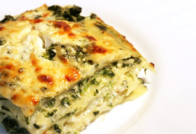
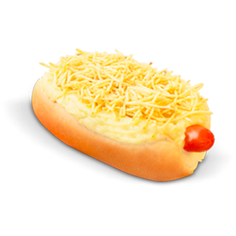

Lasanha de Ricota e Brócolis
Ingredientes
- 2 colheres de sopa de margarina
- 3 colheres de sopa de farinha de trigo
- 1 litro de leite
- Sal, noz-moscada e pimenta do reino a gosto
- 1 e 1/2 xícara de chá de ricota passada pela peneira (190g)
- 1/2 xícara de chá de leite
- 2 colheres de sopa de nozes picadas (20g)
- 1 colher de sopa de azeite
- 2 dentes de alho amassados
- 300g de brócolis cozidos
- Meio pacote de lasanha
- 4 colheres de sopa de queijo tipo parmesão ralado (40g)
Modo de preparo
Molho branco:
- Numa panela aqueça a margarina, junte a farinha de trigo e cozinhe em fogo baixo, até obter uma pasta.
- Acrescente o leite aos poucos, mexendo vigorosamente, cozinhe em fogo brando, até o molho encorpar, tempere e reserve.
Pasta de ricota:
- Numa tigela, misture a ricota com o leite e as nozes, tempere e reserve.
Refogado de brócolis:
- Numa panela, aqueça o azeite e doure o alho, junte o brócolis, cortado em pedaços pequenos, refogue os brócolis por alguns minutos, mexendo de vez em quando, tempere e reserve.
Montagem:
- Num refratário quadrado, cubra o fundo com uma camada de molho branco.
- Por cima distribua, lado a lado, cerca de 3 tiras de lasanha.
- Em seguida, a pasta de ricota, o refogado de brócolis.
- Repita a montagem nesta ordem, finalizando com uma camada de molho branco.
- Polvilhe a superfície com queijo parmesão.
- Cubra o refratário com papel-alumínio, leve ao forno médio (180°C), pré-aquecido, por 25 a 30 minutos ou até ferver.
- Retire o papel-alumínio e cozinhe por mais 10 minutos ou até que a superfície esteja gratinada, deixe no forno desligado por 10 minutos.

Hot Dog
Ingredientes
- 6 pães tipo hot dog
- 6 colheres de maionese de sua preferencia
- 1 dente de alho amassado
- 2 xícaras de chá de batata palha
- 6 salsichas aferventadas
Modo de preparo
- Corte os pães e passa a maionese misturada com o alho.
- Espalhe a batata e coloque a salsicha